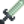
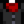
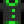
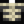
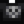
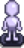
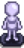

Haunted Skull
| Haunted Skull | |
| Information | |
| Spawns In: |
|
| Floors: | All |
| Killable: | Yes |
| Base HP: | 160 |
| Base Damage: | 15 |
| Base Def: | 1 |
| Speed: | 3 |
| XP: | 15 |
| Variations: | |
| Drops: |  Dark Sword (1.3%)Gray Baggy Pants (0.22%)   Gray Relaxed Fit Pants (0.22%)     Only in Winter: If Vault bundles completed: If Vault bundles not completed: If reached bottom of Mines: |
Haunted Skulls are a flying enemy found in the Quarry Mine and in dungeon floors in The Mines.
Behavior
Their behavior is similar to that of Bats and Serpents; they may fly away from the player and change the direction of attack.
They have 2 methods of appearing:
- They can be regular enemies on the floor. Approaching them makes them active and they will attack the player from this point on.
- They can appear at random. They will screech and then one will approach from a random direction outside the floor.
Strategy
The best weapon may be a regular sword swing (not a club or dagger), since its angle is large. If possible, move in a contrary direction to the Skull so a mob is all on one side of the player, and swing at them all at once.
Gallery
Haunted Skulls in the Quarry Mine
References
Basic stats (HP, damage, defense, speed, and XP) can be found in Content\Data\Monsters.xnb, MineShaft::getMonsterForThisLevel and the constructor for Bat in the game code.
History
- 1.4: Introduced.
- 1.6: Added Cursed Mannequins to drop pool.